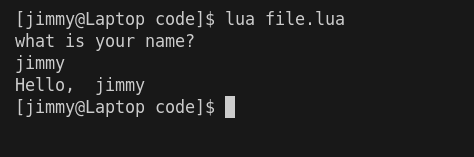

Reading Books
This chapter gives an introduction on how to interact with a book produced by mdBook. This assumes you are reading an HTML book. The options and formatting will be different for other output formats such as PDF.
A book is organized into chapters. Each chapter is a separate page. Chapters can be nested into a hierarchy of sub-chapters. Typically, each chapter will be organized into a series of headings to subdivide a chapter.
Navigation
There are several methods for navigating through the chapters of a book.
The sidebar on the left provides a list of all chapters. Clicking on any of the chapter titles will load that page.
The sidebar may not automatically appear if the window is too narrow, particularly on mobile displays. In that situation, the menu icon (three horizontal bars) at the top-left of the page can be pressed to open and close the sidebar.
The arrow buttons at the bottom of the page can be used to navigate to the previous or the next chapter.
The left and right arrow keys on the keyboard can be used to navigate to the previous or the next chapter.
Top menu bar
The menu bar at the top of the page provides some icons for interacting with the book. The icons displayed will depend on the settings of how the book was generated.
| Icon | Description |
|---|---|
| Opens and closes the chapter listing sidebar. | |
| Opens a picker to choose a different color theme. | |
| Opens a search bar for searching within the book. | |
| Instructs the web browser to print the entire book. | |
| Opens a link to the website that hosts the source code of the book. | |
| Opens a page to directly edit the source of the page you are currently reading. |
Tapping the menu bar will scroll the page to the top.
Search
Each book has a built-in search system.
Pressing the search icon () in the menu bar, or pressing the S key on the keyboard will open an input box for entering search terms.
Typing some terms will show matching chapters and sections in real time.
Clicking any of the results will jump to that section. The up and down arrow keys can be used to navigate the results, and enter will open the highlighted section.
After loading a search result, the matching search terms will be highlighted in the text.
Clicking a highlighted word or pressing the Esc key will remove the highlighting.
Code blocks
mdBook books are often used for programming projects, and thus support highlighting code blocks and samples. Code blocks may contain several different icons for interacting with them:
| Icon | Description |
|---|---|
| Copies the code block into your local clipboard, to allow pasting into another application. | |
| For Rust code examples, this will execute the sample code and display the compiler output just below the example (see [playground]). | |
| For Rust code examples, this will toggle visibility of "hidden" lines. Sometimes, larger examples will hide lines which are not particularly relevant to what is being illustrated (see [hiding code lines]). |
Here's an example:
#![allow(unused)] fn main() { println!("Hello, World!"); }
Chapter 0: Introduction
last updated: 2025-03-25
Helloooo! 0/
This is meant to be a quick read about the general concepts in programming especially for beginner concepts to programming, however, some advanced concepts may be added later on.
Tutorials exist everywhere, why even make this?
Some people, especially beginners, fall into the pretense that you're tied to one framework or programming language, while in reality, a lot of things done by one language can just as easily be done by another, the skills you learn if understood in a general context, are easily transferable between a multitude of other technologies.
This book aims to give this general context to the basics and maybe intermediate topics of programming.
General Outline of what to expect:
every programming language out there has the following features:
- a way to input and output data on screen or to a file
- a way to store values into some place in memory
- a way to only do something if a condition is true
- a way to repeat something being done a set amount of times
- a way to group code into small repeatable chunks
- a way to map a blueprint of a set of values into a larger place in memory
I'll explain those in detail later but generally that's what most programming languages should support, maybe a select few ones might not support number 6.
I'll also use lua as a programming language, just because :)
Chapter 1: IO
last updated: 2025-03-25
Some definitions:
- command: a piece of code that does a thing for example
print("hi")is a command that displays hi on the screen
There's no program that doesn't take in input and give output, some common forms are:
- to and from a console window (a traditionally black and white window that can only display text)
- to and from a file
- to and from another program
- to and from a Graphical User Interface (GUI), which is the most common form of Input and output (IO) as of today.
This book will only use console output for any sort of output as it's the easiest and quickest to do, however, maybe further in more complex topics we'll explore the other ways of handling IO.
CONSOLE
Output to a console window
this arguably the easiest way to check if a piece of code is getting reached, it shows output to a window called a terminal emulator, mostly called cmd in windows, and it usually looks like this:
the above picture was the output of the following piece of code
print("hello world") --prints console window output
you might also find them called standard output and input
Input from a console window
Easiest way to get input for a program, input is usually done with a keyboard in an input field and is almost always in text

notice how it's different from output where it ended the program right away? It's waiting asking for input

the above picture was the output of the following piece of code
print("what is your name?") --prints console window output
io.read() --reads console window input
Notice how for each input and output there's one command that does it, that's common among all other languages.
Summary
a quick recap on what this chapter says, there doesn't exist a single viable program that doesn't take input and give output.
Input or output can be a file, gui, another program, or a standard IO (console window)
all languages have at least one command to facilitate input gathering and output display
Chapter 2: Variables
last updated: 2025-03-26
as you've seen in Chapter 1 how we can get input from different sources for our program, but how do we actually use them though? Using something like io.read() only gives the computer the instruction to take in input, but not to remember it, that's where variables come in.
Let's be clear on one thing, no program runs on the hard disk drive (HDD) or solid state drive (SSD) directly, any and all programs are first moved onto the RAM in order to work properly, no matter how fast your SSD is, it's not faster than your RAM, the RAM is also closer to the CPU which makes it faster, but in turn this will always mean whatever data you store will be deleted after you close your program unless you save it to a place in your SSD.
So when I say "store" from now on I will my referring to you RAM and not in a physical file somewhere on your computer.
What are variables
Variables are like a box which you can put one thing in, they're a place in memory only big enough for One value, they're also a way to remember these values later on the program because you give them a name.
How to use variables
Declaration
Say you see something like this in your code
local name = io.read()
we already know that io.read() takes in input, but what's that to it's left? The keyword local tells the program "I want to assign whatever input comes in to a place in memory" and the part before the equal sign is a name, so now you're telling the computer "I want to assign whatever input comes in to a place in memory, and name 'name' for whenever I need it again", the equal sign just say that it'll be assigned whatever value is on the right.
Types of variables
As we established that variables are a space in memory for one thing, it's important to know how does it know how much of a space to assign? The answer is data types.
Generally, there's a handful of data types in every programming language called primitive data types and those are
- integer (also called int for short): these are numbers that aren't decimals and can't have a decimal point
eg: -1,0,1,2,3,4,... - float (short for floating point numbers): these are decimal numbers with a decimal point
eg 1.0, 0.5, -1.2,... - double: floats have a limit to how big they can get, so if they're not enough for you, you can use doubles
- char (short for characters): they are one character
eg: a,b,أ, ö - strings: these are multiple characters, can be a word, a sentence, a paragraph, or the declaration of independence.
Some languages might require explicit declaration of the variable type, those are called Strongly typed languages, while those that don't are called Weakly typed languages
Some languages might not offer strings as a datatype, and some might not use a keyword like local to declare a variable, you just write the name and it'll figure it out, so check how to declare them for each language you might use.
using a variable
how do you call for someone you know that's standing far from you? You use their name! That's exactly how you use a variable too :D
so say we've shown the user a prompt asking for their name as follows
print("what is your name? ")
local name = io.read()
this told the computer "I want you to show the user the sentence 'what is your name?' and then save whatever the user inputs into a place in the memory called name" now that gives us a way to use it by calling the "name" like this
print("Hello, ", name)
that tells the computer "show the user the sentence 'Hello, ' followed by whatever value is inside the place named 'name'" which should give us an output like this

also, using variable names anywhere in your code with replace them with their value while your code is running allowing you to use variables in many other ways other than just outputting them!
For example:
- arithmetic
local a = 2 local b = 3 local c = a + b print(c) -- 5 - string manipulation
local a = "Hi " local b = "There!" local c = a .. b print(c) --Hi There!
you might have realised I use -- sometimes which isn't something I've explained yet, those are called comments, your computer will ignore them while trying to execute your code, they're meant for you or other people who read the code later on.
Summary
Variables are named place in memory to save input given to the program.
Most language use a keyword for declaring a variable so check it for each language.
Variable names are replaced with their values during code execution.
Some languages require explicit expression of the variable types.
Chapter 3: Conditionals
Sometimes you only want to activate some part of the code only if some condition applies, Say you're creating a login page that only admits one person named "mark" with all lowercase characters.
IF statements
if statements allow us to execute a piece of code if a condition applies, otherwise, it'll be ignored and in most programming languages it looks like this:
if (condition) {
// do something
}
with some changes like removing the need for parentheses of brackets, or replacing them with a keyword or a way to indicate the start and end of an if statement. In lua it looks like this:
if condition then
-- do something
end
and you replace "condition" with what's called operands similar to in how we have in maths
=for equals>more than<less than>=more than or equals<=less than or equals- we also have
%for remainder, called modulo or modulus we have here theseoperandsthat evaluate to either true or false, they are: ==for equals!=for not equals>for more than<for less than>=for more than or equals<=for less than or equals most programming languages have types of if statements too
Normal if statements
they're similar to the examples above, so let's implement the example we first mentioned, first I want you to think of the steps to implement this yourself generally not in code and then we'll figure out how to implement it.
Answer
first you would want to get the user's name through some form of input, wouldn't you? But how would the user know that we require their name if we don't output something telling them what we want? Now that we established that we need to show them some prompt and take their input, we use what learned before to write it like this print("what is your name? please write it in all lowercase")
io.read()
but now we also need to remember the user input don't we? Because we want to check if their name is "mark"
print("what is your name? please write it in all lowercase")
local user_name = io.read()
now we get to the point where we check if it's mark, we use the example in we used before to write it
print("what is your name? please write it in all lowercase")
local user_name = io.read()
if user_name == "mark" then
print("Oh hi, mark!")
end
If else statements
similar to if statements, you can add an else block for whenever the condition evaluates to false, so if name == mark for example we want to show "Oh hi, mark", otherwise it'll show "Go away"
in lua you'd have an else statement like this
if condition then
--do something
else
--do something else
end
so the Answer to it would be like this
Answer
print("what is your name? please write it in all lowercase")
local user_name = io.read()
if user_name == "mark" then
print("Oh hi, mark!")
else
print("Go away!")
end
switch case
this is similar to an if statement, it's mostly used because writing multiple if statements after each other is harder to read and is slower in performance, but otherwise you're free to use whichever, lua doesn't seem to have an implementation for it so I'll refrain from writing an example, you can look it up yourself.
Chapter 4: Loops
Before we get into what loops are there's an extra bit I need to talk about some extra things about variables which are arrays
Arrays
We explained before that variables are name places in memory big enough for one value, but sometimes we need more than one value, so as an effort not to repeat ourselves, arrays were made.
Arrays assign a place in memory for multiple values under one name, so say we have a to-do list, trying to make it by adding each of them as a separate variable would be difficult
local entry1 = "do your skincare"
local entry2 = "wash the dishes"
local entry3 = "iron your clothes"